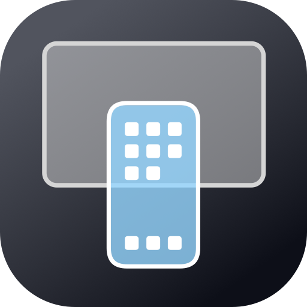
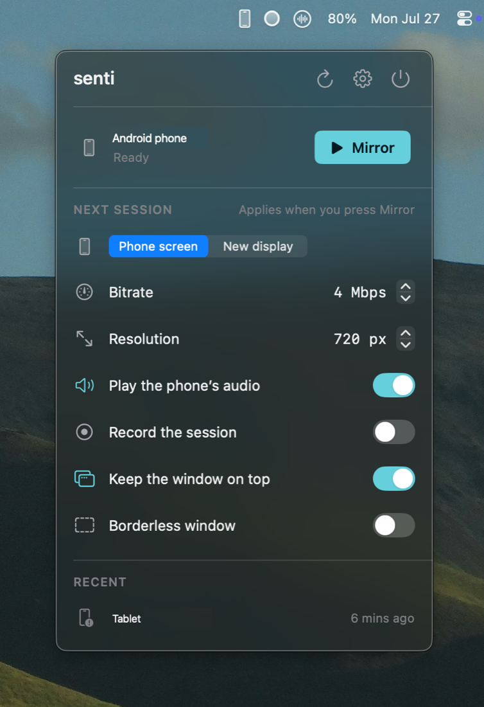
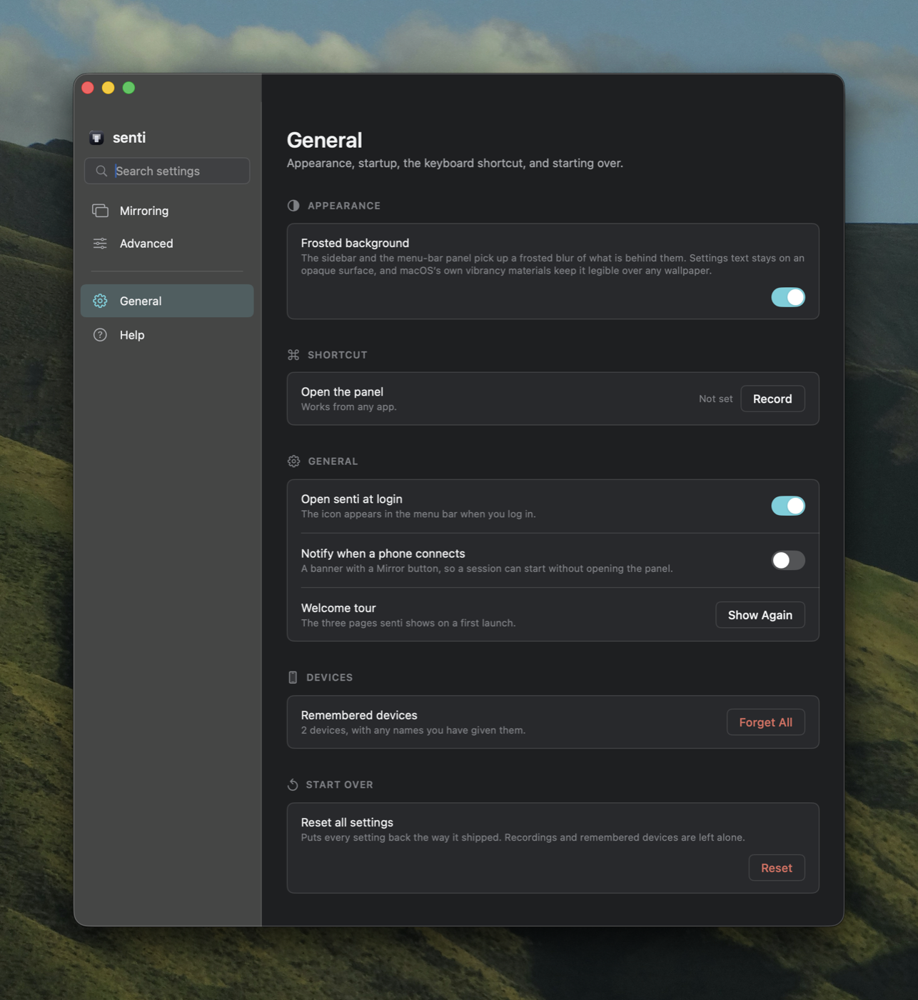

Mirror an Android phone on the Mac over USB. Click the menu-bar icon, press Mirror — no Terminal, no Homebrew, nothing to install.
scrcpy and adb ship inside the app and unpack themselves on first launch. Plug a phone in and a banner appears with a Mirror button on it.


Phone screen or a new display, bitrate, resolution, audio, recording and window behaviour — written the way you would say them, not the way the command line takes them.
Rename each phone and senti remembers it. Optionally start mirroring the moment a particular one connects, and open the panel from anywhere with a global keyboard shortcut.
$ git clone https://github.com/smrazar/senti.git $ cd senti $ ./install.sh
GPL-3.0, because scrcpy is. Everything it needs ships inside the app.